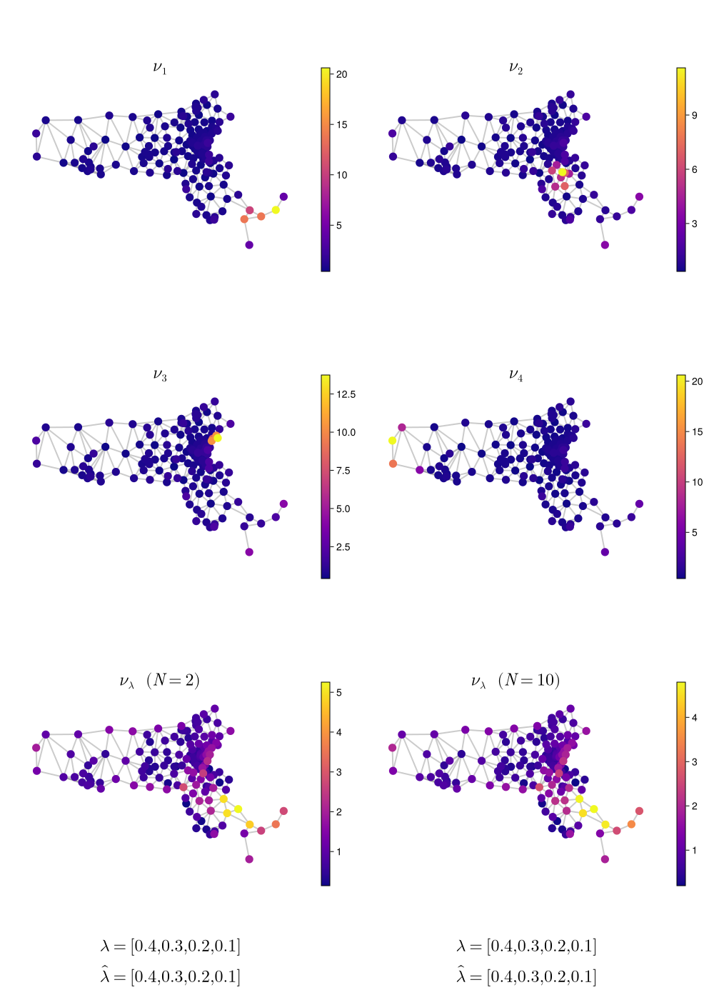

Examples
Numerical experiments from the paper "Computation of optimal transport on discrete metric measure spaces" (Erbar, Rumpf, Schmitzer, Simon).
Each script is self-contained and writes its output (.jld2 data file and/or .pdf figures) to the directory it is run from.
Setup
The examples use a separate Julia environment that includes plotting and data dependencies not required by the package itself. From the repo root:
julia --project=examplesThen instantiate once:
julia> import Pkg; Pkg.instantiate()After that, run any script with:
julia --project=examples examples/<ScriptName>.jlMassachusetts experiments additionally require the MA House Districts shapefile from MassGIS. See the header of
MassachusettsBarycenter.jlfor download instructions.
Experiment descriptions
Synthetic graph experiments
| Script | Description |
|---|---|
CubeBarycenter.jl | Discrete transport barycenter of four measures on the cube graph (8 nodes). Produces a 2×2 reference panel alongside the barycenter. |
HypercubeBarycenter.jl | Barycenter on the unweighted and randomly weighted 4-dimensional hypercube (16 nodes), visualised with a Schlegel diagram. |
ODE validation
| Script | Description |
|---|---|
ErbarODE.jl | Validates the WGD barycenter against an explicit ODE solution on the two-point space. Compares discrete transport, WGD barycenter, and Euler ODE across 1000 time steps; produces six diagnostic figures. |
Geodesic and barycenter recovery
| Script | Description |
|---|---|
GeodesicRecovery.jl | Tests coordinate recovery on the triangle graph. Synthesises barycenters along a geodesic, recovers barycentric weights, and measures relative error. Includes a randomised trial producing an error histogram. |
SynthesisAnalysis.jl | Evaluates synthesis–analysis round-trip accuracy on grid graphs. Computes random barycenters and measures weight-recovery error as a function of iterations. |
Grid graph experiments
| Script | Description |
|---|---|
GridComparison.jl | Compares WGD barycenter with Sinkhorn barycenters (shortest-path and diffusion-distance costs) on a 7×7 grid. |
InitializationsGrid.jl | Benchmarks sensitivity to warm-start initialisation on a 5×5 grid with five reference measures. |
GridStepSizeVariations.jl | Sweeps over geodesic step-count parameters on a 4×4 grid, reporting timing and output distance for cold vs. warm starts. |
USA state graph experiments
These experiments use the 49-node contiguous-USA graph (one node per state plus DC) constructed from adjacency.
| Script | Description |
|---|---|
StatesComparison.jl | Side-by-side comparison of WGD, Sinkhorn/shortest-path, and Sinkhorn/diffusion-distance barycenters on the USA graph. |
EntropicComparison.jl | Detailed comparison of Sinkhorn barycenters at diffusion-distance costs with varying time parameter t ∈ {2, 4, 8, 16} against the WGD baseline; California, Maine, and Tennessee as reference measures. |
StateInitializations.jl | Benchmarks initialisation sensitivity on the USA graph with five geographically concentrated reference measures. |
ParameterVariationsUSA.jl | Heatmap of coordinate-recovery error across a grid of (geodesic_steps, geodesic_tol) parameter values on the USA graph. |
WarmStartBenchmark.jl | Timing comparison of cold vs. warm-started barycenter computation on the USA graph. |
StateStepVariations.jl | Investigates synthesis–analysis step consistency: synthesises at N ∈ {4, 16, 32} geodesic steps and analyses at all values, producing a 3×3 error matrix. |
BCMDemo.jl | Visualises the Barycentric Coordinate Manifold on the USA graph: seven barycenters arranged in a triangle according to their recovered weights. |
Massachusetts House district graph experiments
These experiments use the 160-node Massachusetts House of Representatives district graph derived from the 2021 MassGIS shapefile (rook adjacency). Run MassachusettsBarycenter.jl first to generate the cached Markov chain.
| Script | Description |
|---|---|
MassachusettsBarycenter.jl | Computes a WGD barycenter of four geographically concentrated measures on the MA House graph at two solver tolerances, with coordinate recovery. |
MassachusettsGeodesic.jl | Visualises the discrete transport geodesic between two geographically distant districts (nodes 5 and 145) in five time frames. |
Barycenter of four reference measures on the MA House graph:
